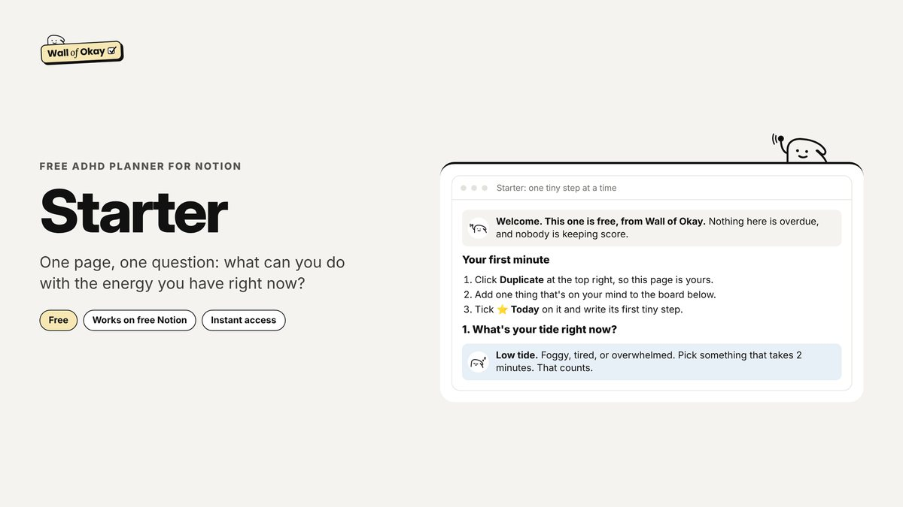
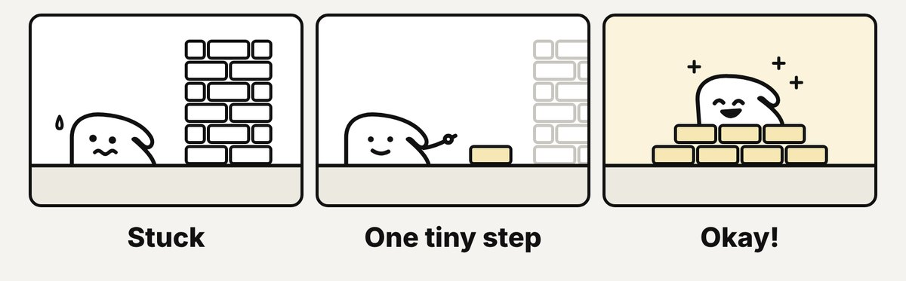

Notion · Guide
Wall of Okay: Calm ADHD Notion Templates, and How to Use Them
Full disclosure: I built Wall of Okay, so I’m not neutral. Everything below is how it actually works.

Most planners sort your day by deadlines. Wall of Okay sorts it by how much energy you have right now, then shrinks the first step until it’s small enough to start. It’s a set of calm Notion templates for ADHD brains, and two of them are free.
Why starting is the hard part: the Wall of Awful
ADHD coach Brendan Mahan calls it the Wall of Awful: the bad feelings that stack up between you and a task, brick by brick, until starting feels impossible. He breaks it down in his book Overcoming the Wall of Awful, written with Alex Hughes Capell and published by Hachette. CHADD, the ADHD nonprofit, describes the same trouble as a problem with task initiation, an executive function skill.
Wall of Okay borrows the name, but not the wall. You can’t knock the wall down, so the first step gets small enough to climb.
From Wall of Awful to Wall of Okay
- 1Every “why can’t you just…” adds a brick
- 2You, stuck in front of it
- 3The first step gets tiny: two minutes
- 4Then the next one
- 5And the next
- 6You’re over. Not perfect, just okay.
How the templates work: energy, not deadlines
Every Wall of Okay planner starts with one question: what’s your tide? Low tide means foggy or tired, so you pick something that takes two minutes. Mid tide is for errands and replies. High tide is for the one hard thing, before anything else. Each task also gets a “first tiny step”, and nothing is ever overdue.
Try it: what’s your tide right now?
Low
Take out the recycling2 min
Drink a glass of water1 min
Mid
Reply to that email15 min
Pay one bill10 min
High
Start the big project1 hour+
Sort the taxes folder45 min
Tap your tide, and only that column stays.
Which Wall of Okay template is for you?
| What it is | Price | |
|---|---|---|
| Starter | One page: a brain dump sorted by energy and a “can’t start” helper | Free |
| Dopamine Menu | Quick refills for when your brain runs low | Free |
| Low Tide | Brain dump, energy board, Dopamine Menu and a ten-second check-in | $9 |
| Full Tide | Adds wellness, home, money, people and a weekly review | $24 |
Prices are one-time with free updates, per the Low Tide page. The Dopamine Menu builds on an idea made popular in 2020 by Jessica McCabe of How to ADHD and ADHD therapist Eric Tivers, as The Conversation explains.

How to use it in three minutes
- Get your link. The Starter comes by email. Paid templates check out on Gumroad, and the link shows up on screen and in your inbox.
- Tap Duplicate. It copies into your own Notion. The free plan is enough, and it works in the phone app.
- Check your tide. Pick one card from that column and write its first tiny step.
- Fell off? The Welcome back section restarts you in three ticks. No streaks to lose.
Who Wall of Okay helps
It’s built for ADHD brains, but it fits anyone who freezes in front of a long to-do list: students, people working from home, anyone coming back after a rough week. If you’ve never used Notion, a short guide is built into every page. It’s a planning tool, not treatment, and it says so.

My take
I built this, so yes, I’m biased. The part I care about most is that nothing in it is ever overdue.
If you try one thing, type the task you’ve been avoiding into the Stuck right now box on the home page. It’s free, no email, and it takes two minutes.
FAQ
Do I need a paid Notion plan for Wall of Okay?
No. Every Wall of Okay template works on Notion’s free plan, on a computer or in the Notion phone app.
Is Wall of Okay free?
Partly. The Starter planner and the Dopamine Menu are free. Low Tide is $9 and Full Tide is $24, both one-time payments with free updates.
What is the Wall of Awful?
It’s ADHD coach Brendan Mahan’s name for the build-up of bad experiences and feelings that makes a task feel impossible to start. Wall of Okay is named after it, but isn’t affiliated with him.
Is Wall of Okay a treatment for ADHD?
No. These are planning tools, not medical advice or treatment. If ADHD is getting in your way, talk to a doctor or a qualified professional.
Sources
- Wall of Okay: calm Notion templates for ADHD brains
- Wall of Okay: Low Tide and Full Tide
- Wall of Okay: free Dopamine Menu
- Hachette: Overcoming the Wall of Awful by Brendan Mahan
- Porchlight Books: Overcoming the Wall of Awful
- CHADD: getting started on inexplicably tough tasks
- The Conversation: dopamine menus, the science behind the trend
- CHADD: dopamine menus and ADHD